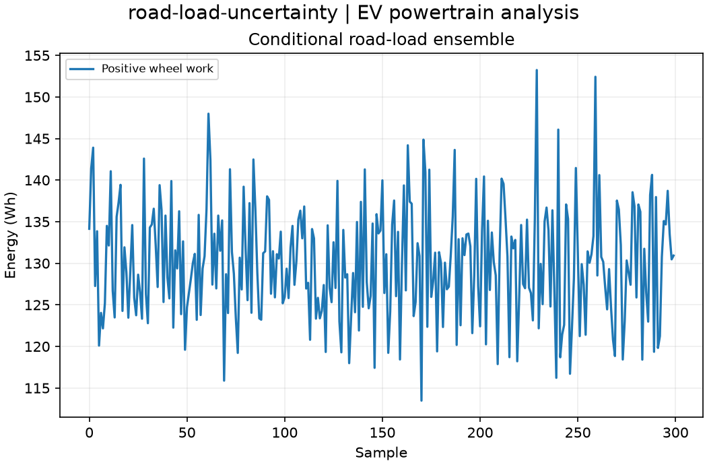

Reproducible EV powertrain analysis. Units and field components are printed on the scientific axes. peak d-q quantities use exp(+i omega t); terminal currents point into the protected line.
Sealed numeric archive | Summary CSV | Physical parameters | Run request | Source and environment

| traction_interval_wh | [119.22802507715139, 130.0423281582703, 141.2543575109097] |
|---|
These are simulations, not hardware measurements. Network-model, measurement, timing and statistical uncertainty require distinct convergence checks. Singular or unilluminated data use explicit masks.
Source revision: 2792f3a8b3e00c0f3d682921027e49ad8ab7aae8.
Dirty checkout: False.
Configuration SHA-256: e128258cf3214f2ad53a972f60db4887db89610d4db7765ae94f62dbc46d929f.
Replay preserves original source and parameter provenance. SHA-256 manifests detect changed bytes; they are unsigned integrity records, not certificates of physical validity.